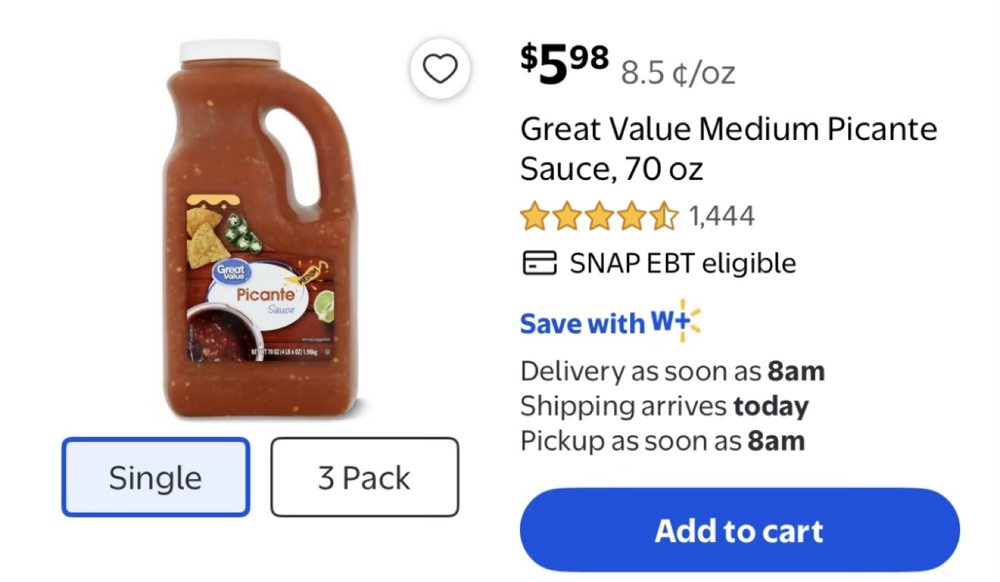

Research confirmed it. The best cheese for a serious dip is Tillamook Sharp Cheddar — aged over 9 months, farmer-owned since 1909, and a 2024 World Championship Cheese Contest Best in Class winner in the Sharp Cheddar category. That block is one half of the helix. The other half is Taco Works chips, made in San Luis Obispo since the late 1970s. Get those two strands locked in and the toppings become infinite — just like pizza. The sequence is yours to define.
This is not a street-food pitch. It is the formula that fell out of a personal challenge: how do you monetize high-quality, low-overhead craft cooking with nothing more than a properly tuned gas burner, a $10 nonstick pan, and ingredients you can grab at Walmart or the neighborhood market? The answer lives in the High Tower District.
Two Strands, Infinite Sequences
One strand: the 2 lb block of Tillamook Sharp Cheddar. Net weight 32 oz. From cows not treated with rBST. Available in California for $10.95 on a good day at the local market, or $12.50 every single day at Walmart. Walmart used to flip between $10 and $15; for the last three months they have settled on the average. Rules change — that is the only constant.
The other strand: Taco Works tortilla chips, manufactured in San Luis Obispo. Local Central Coast staple since Ty Bayly started making them in his restaurant and then built a factory. The texture and seasoning hold up under a heavy, hot dip without turning to mush. That is the chip half of the DNA.
The connection between the strands is the salsa. Great Value Medium Picante Sauce (70 oz jug, $5.98, 8.5 ¢/oz) is the least expensive option that does not destroy the dip with excess water. You can make your own, but this one pays for the disposable container and keeps the margin clean. Mix a measured amount into the melting cheese — that is the base-pair bond.

Gas Burner + $10 Pan + Dollar Tree Spatula
Simply having a gas burner that is tuned properly on low for 10 minutes or less, along with the $10 nonstick pan from Ross — and there is no loss at Ross — is the entire production line. The pan in question is the Carote 8" nonstick (white granite finish). At Walmart it sits around $11.97–$12; at Ross it is $10. Key detail: look for the color and the absence of bolts near the handle attachment. Fewer crevices mean easier cleaning and longer life under repeated low-heat cycles.
The spatula is half of a $13.02 McCormick set at Walmart. At Dollar Tree it is $1.25. Same tool. That is the real-time arbitrage that keeps overhead near zero.
Heat source cannot be compromised. Propane outdoors or the house gas burner both work — as long as the flame is even and the heat stays low. High heat at the start followed by constant stirring can cut time, but the moment it starts bubbling you back it off. Simmer gives the most even, consistent melt. Grating the cheese is optional and speeds the process; leaving it in chunks is fine if you are patient. Texture of the finished cheese tells you everything. There is no single “wrong” way, only degrees of evenness.


Canned Goods Raise Visual Appeal Without Dropping Quality
Once the two helix strands are connected by the salsa, the toppings define the sequence. Southwest corn (canned), green chilies (canned), black beans (Great Value). All three work like champs. Nothing complicated. Name brands are optional; the goal is highest possible margin while holding quality. Canned goods do not lower the quality of the finished dip — they increase the visual appeal and the convenience. You are not busting open metal cans and washing extra containers mid-service. The disposable salsa jug already paid for that convenience.
Higher-end salsa is fine if the event calls for it, but by the ounce the Great Value jug wins for everyday execution. Local neighborhood grocery stores carry every chili variety you can imagine. Walmart covers the rest of the vegetable aisle. The formula stays flexible by design.

Batch Economics & Margin Math
Sample batch sized for 8–10 generous servings (one full pan of dip + one bag of chips):
- 1 lb Tillamook Sharp Cheddar (half the 2 lb block) — ~$6.00 (using blended $12 average)
- One bag Taco Works chips — ~$4.00
- Great Value picante portion + three cans (corn, green chilies, black beans) — ~$3.00
- Gas / overhead / amortized tools for a 10-minute low simmer — ~$1.50
Total cost ≈ $14.50
If the batch is valued or moved at $40 (content sponsorship, private event, challenge prize, or simple neighborhood order), the gross margin is:
($40 − $14.50) / $40 = 63.75%
Overhead is almost entirely the ten minutes of attention and the gas. Tools are sunk or near-zero after the first use. That is the operations-research core: maximize the quality-to-cost ratio while keeping the process mobile and low-commitment. No storefront, no inventory risk beyond one block of cheese and a few cans.


High Tower District Context
This formula was built inside the District — 93728, the same blocks where the gas burner, the Ross run, the Dollar Tree score, and the local-market cheese hunt all happen. It is practical knowledge, not theory. The challenge was personal: create something high-quality that can be repeated, documented, and monetized without turning into a full food-service operation. The helix is the answer that stuck.
For The High Tower District Community
This story is the written companion to the real-world video. Scroll it while the burner is on low. Share it with anyone who thinks great dip requires a restaurant kitchen.